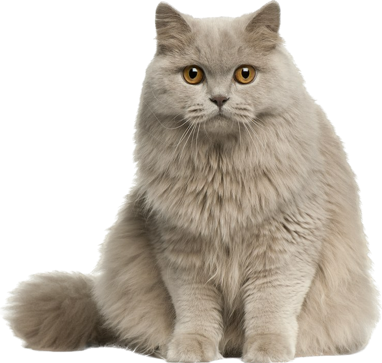

Zanim przedstawimy najpopularniejsze rasy kotów, przyjrzymy się samej kwestii rasy. O to, ile z nich do tej pory
wyodrębniono,
spierają się nawet organizacje felinologiczne. FIF (Fédération Internationale Féline), czyli Międzynarodowa
Federacja Felinologiczna
zrzeszająca hodowców z Europy, Ameryki Południowej i Azji, twierdzi, że dotychczas na świecie wyodrębniono
niemal 50 ras kotów.
Niektórzy twierdzą z kolei, że liczba ta powinna być dwukrotnie wyższa. Rozbieżności spowodowane są
odmiennym sposobem oficjalnego
uznawania ras, jak i stale rozwijającym się procesem powstawania i krzyżowania kolejnych.
Ciężko wymienić wszystkie, dlatego podamy jedynie te, które najbardziej przypadły do gustu naszym rodakom.
KLIKNIJ
